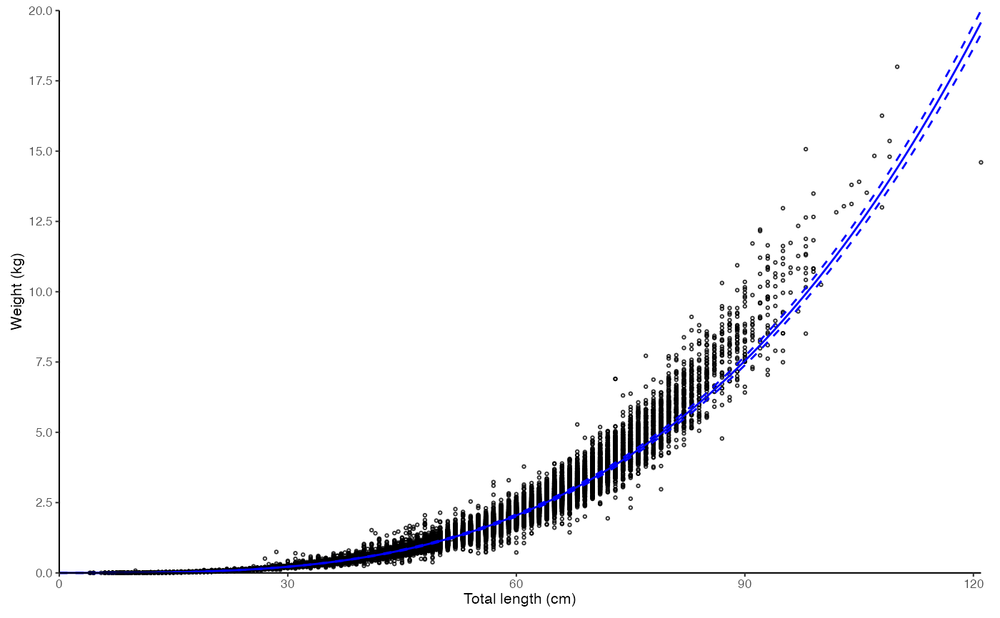

Plot length-weight relationships
plot_lw(
dt,
length = "length",
weight = "weight",
sex = "sex",
female.sex = "F",
male.sex = "M",
length.unit = "cm",
weight.unit = "kg",
split.by.sex = FALSE,
xlab = "Total length",
ylab = "Weight",
use.nls = FALSE,
init.a = NULL,
init.b = NULL,
log.axes = FALSE,
base_size = 8,
legend.position = "bottom",
correct.units = FALSE,
verbose = TRUE
)Arguments
- dt
A data.frame, tibble or data.table
- length
Character argument giving the name of the length column in
dt- weight
Character argument giving the name of the age column in
dt- sex
Character argument giving the name of the sex column in
dt. Ignored ifsplit.by.sex == FALSE.- female.sex
A character denoting female sex in the
sexcolumn ofdt- male.sex
A character denoting male sex in the
sexcolumn ofdt- length.unit
Character argument giving the unit of
length. Will be used in the labels of the figure and for conversion of the a parameter. Allowed values for the conversion: "mm" (millimmeters), "cm" (centimeters), and "m" (meters).- weight.unit
Character argument giving the unit of
weight. Will be used in the labels of the figure and for conversion of the a parameter. Allowed values: "g" (grams), "kg" (kilograms), and "t" (metric tons).- split.by.sex
Logical indicating whether the result should be split by sex.
- xlab
Character giving the x-axis label without unit
- ylab
Character giving the x-axis label without unit.
- use.nls
Logical indicating whether the parameters should be calculated using the nonlinear least squares (
nls; TRUE) method over the log-log transformed linear model (lm; FALSE) method.- init.a, init.b
Numeric values giving the starting value for a and b parameters respecitively for non-linear least-squares estimation (i.e. when
use.nls = TRUE). IfNULL, default values are guessed.- log.axes
Logical indicating whether logarithmic axes should be used instead of cartesian ones.
- base_size
Base size parameter for ggplot. See ggtheme.
- legend.position
Position of the ggplot legend as a character. See ggtheme.
- correct.units
Logical indicating whether a and b parameters should be converted for centimeters and grams as in FishBase.
- verbose
Logical indicating whether to return warnings and messages.
Value
A ggplot together with the a and b parameters.
Details
It is crucial to get the units right when calculating length-weight relationships. In models, the length and weight units should often match those of the data going into the model, while in comparisons with FishBase, the units of length and weight should be centimetres and grams, respectively. If the units are wrong, the intercept, a, will be off the FishBase scale by orders of magnitude (see FishBase). If correct.units = TRUE, plot_lw() attempts to correct for the units to the FishBase standard (cm and g). The function also returns a warning when the returned parameters are not within expected bounds for cm and g estimation. You can ignore this warning if you want to estimate values. Comparing your a and b with those in FishBase for the species is a good idea. This function may contain bugs.
Examples
data(survey_ghl)
# Simple plot
plot_lw(survey_ghl, length = "length", weight = "weight")
#> $plot

#>
#> $text
#> [1] "Logarithm transformed linear length-weight model. Not splitted by sex: \n a = 0 +/- 0 - 0 (95% CIs). \n b = 3.221 +/- 3.22 - 3.22 (95% CIs). \n Number of included specimens = 67457 \n Total number of measured = 618779 \n Excluded (data missing): \n Length = 0; weight = 551322"
#>
#> $params
#> # A tibble: 2 × 7
#> term estimate std.error statistic p.value conf.low conf.high
#> <chr> <dbl> <dbl> <dbl> <dbl> <dbl> <dbl>
#> 1 a 0.00000382 0.00491 -2540. 0 0.00000379 0.00000386
#> 2 b 3.22 0.00128 2519. 0 3.22 3.22
#>
# \donttest{
# Split by sex
plot_lw(survey_ghl, split.by.sex = TRUE)$plot
 # }
# }